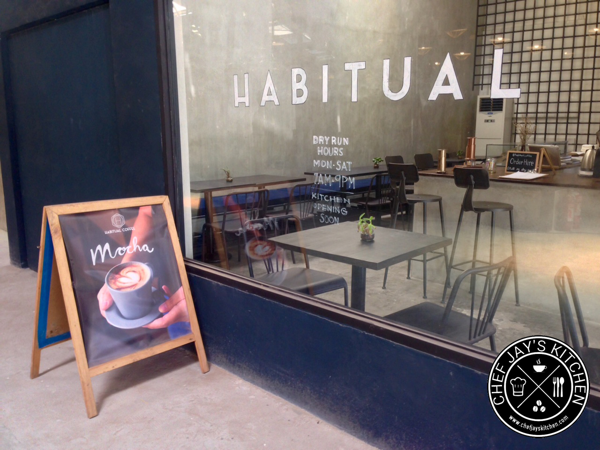
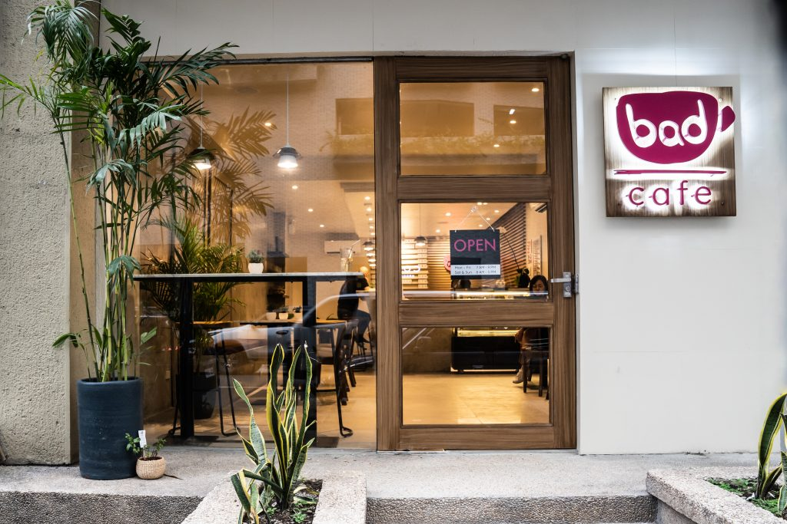
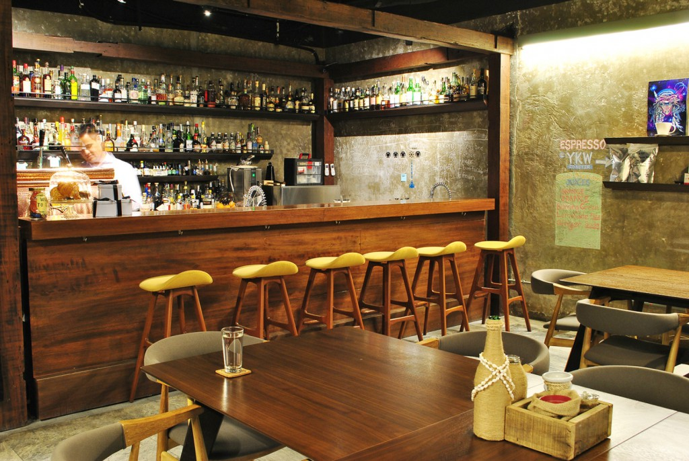
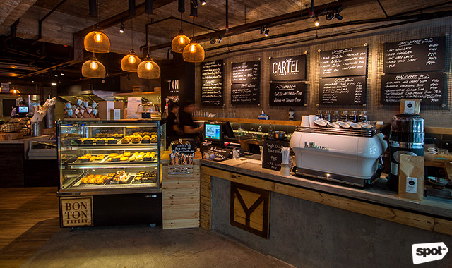
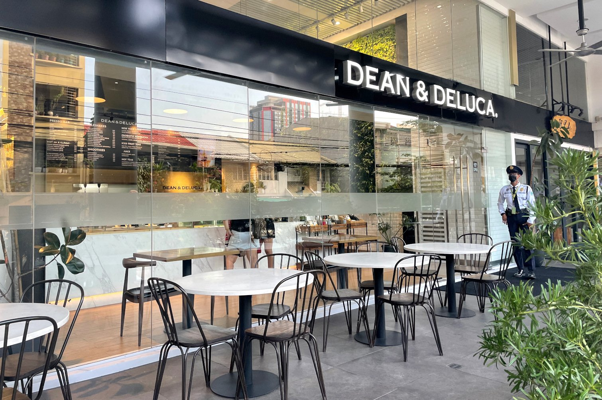
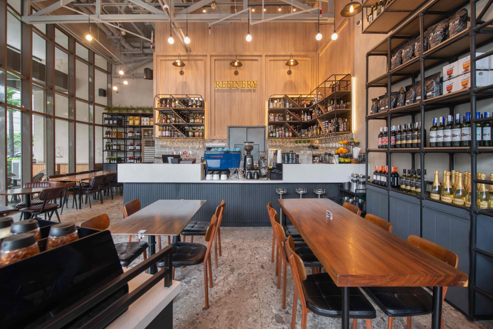
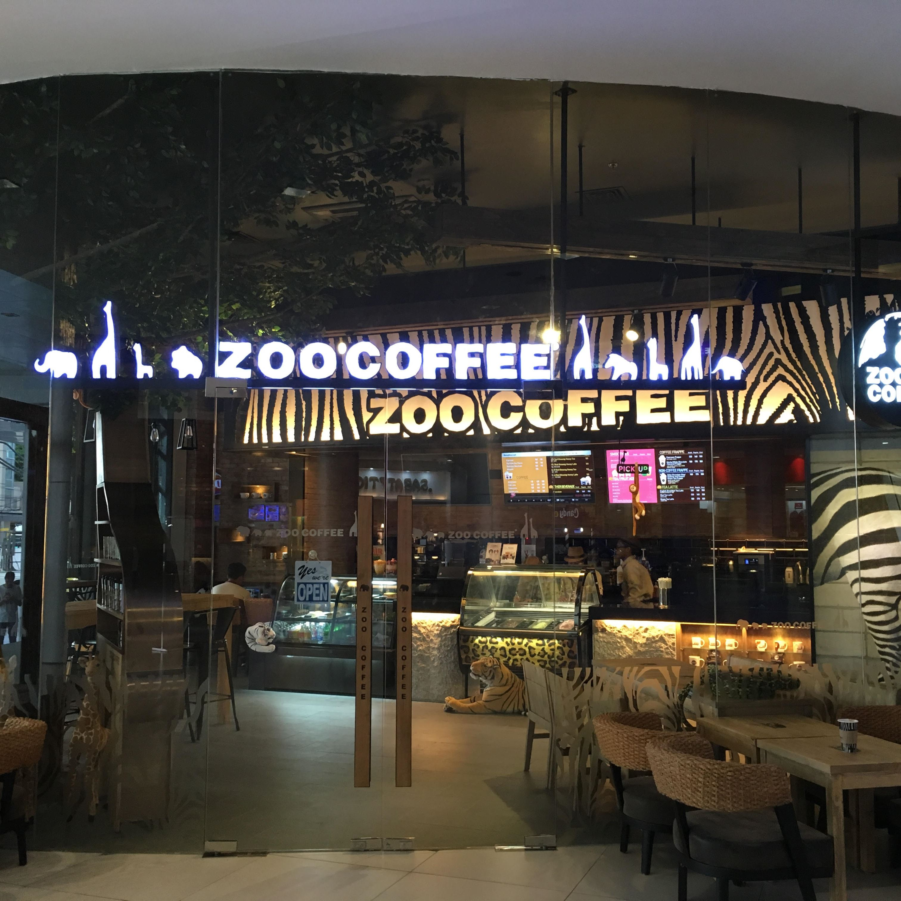
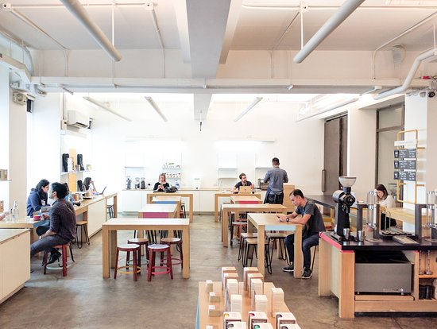

Discover the Finest Cafes
-

Habitual Coffee
@habitualcoffee
Paseo Heights, Salcedo Village, L.P. Leviste Street, Makati
A welcoming area offering a large selection of pastries and coffee blends. Savor the welcoming atmosphere and helpful staff.
-

Bad Cafe
@badcafeph
163 Legazpi St (Windsor Tower, GF) Legazpi Village, Makati
Highlights the best coffee available and the expertise of the highly skilled baristas. In addition to providing baked goods and coffee, and cozy fare, their goal is to act as a community hub that encourages artistic expression and idea sharing.
-

The Curator
@thecurator_
134 Legazpi St. cor. Palanca St., Legazpi Village, Makati
Nestled within Cyrano Wine Bar, a hidden backdoor cafe and drinking lounge that serves handcrafted coffee during the day and exquisite cocktails at night. In addition, it offers a limited-time menu with pastries and sandwiches.
-

Cartel Deli
@cartel.deli
134 Legazpi St. cor. Palanca St., Legazpi Village, Makati
A local delicatessen and cafe offering bread, wine, organic produce from Holy Carabao Farm, chocolates and pastries from Belge & Co. and BonTon, coffee from Yardstick, jamon from Txanton, and more!
-

Dean and Deluca
@deandelucaph
1229, 128 Dela Rosa Street, Legazpi Village, Manila, Metro Manila
Serves coffee, wine, rice dishes, pasta, cakes, and freshly baked breads and pastries. Their salted egg croissant is a must-try.
-

Refinery
@_refinery
Joya Tower, 28 Plaza Drive Rockwell Center
A third-wave cafe that offers light meals, international comfort foods, specialty coffee, and breakfast and brunch items all day long. What makes it unique, though, is that it also serves wine and cocktails. -

Zoo Coffee
@zoocoffeeph
G/F Alphaland Makati Place, Ayala Avenue Extension Corner Malugay Street, Bel-Air, Makati
A global chain of cafes with a zoo theme, originated in Korea. As you finish your thesis, get ready to spend your time cuddling adorable plush toys around the cafe! They provide tea, coffee that is imported from Korea, pastries, waffles, and sandwiches.
-

Yardstick
@yardstickcoffee
G/F Universal LMS Bldg, 106 Esteban St, Legazpi Village, Makati
A unique coffee roasting business that sells and serves coffee that is sourced locally. In addition to their cold brew bottles, Yardstick is well-known for their generously sized waffles.